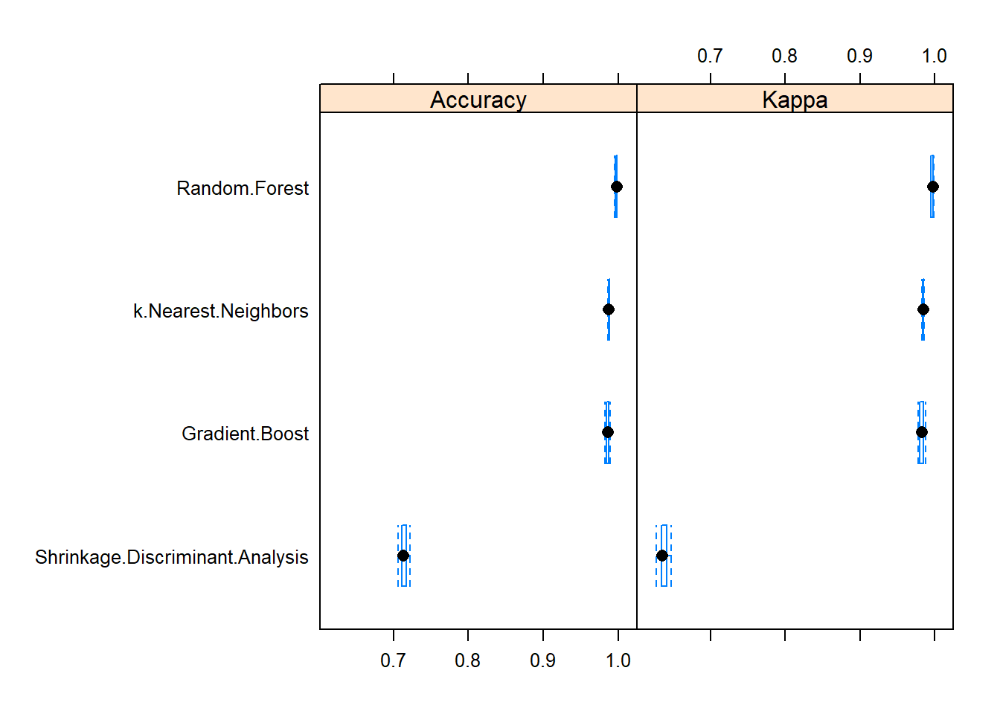
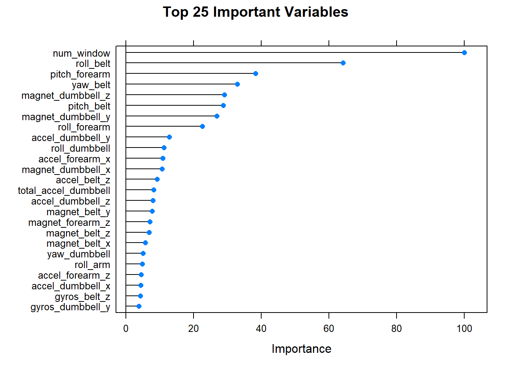

The dataset for human activity recognition consists of 5 classes (sitting-down, standing-up, standing, walking, and sitting) collected on 8 hours of activities of 4 healthy subjects. The objective is to predict the class of activity quality based on the metrics calculated from the sensory signals.
The training and testing data sets were imported and cleaned to remove unnecessary and low variance variables. The trasining dataset was paratitiond into 75% train and 25% test split. In order to increase model computational performance, multiproccessing techniques were used for training control. Following models were explored in this study:
The random forest model showed the best performance and least out of sample error. Using this model the activity classes for validation set were predicted.
Parallel processing in caret can be accomplished with the parallel and doParallel packages. The following code loads the required libraries (note, these libraries also depend on the iterators and foreach libraries).
library(parallel)
library(doParallel)
cluster = makeCluster(detectCores())
registerDoParallel(cluster)library(caret)
library(randomForest)
# setting the seed for reproduceability
set.seed(1234)# Download files if they are not available
file.url.train = "https://d396qusza40orc.cloudfront.net/predmachlearn/pml-training.csv"
file.url.test = "https://d396qusza40orc.cloudfront.net/predmachlearn/pml-testing.csv"
if (!file.exists("data/pml-testing.csv")){download.file(file.url.test, destfile = "data/pml-testing.csv")}
if (!file.exists("data/pml-training.csv")){download.file(file.url.train, destfile = "data/pml-training.csv")}
# Load testing and training datasets
data.train.raw = read.csv("data/pml-training.csv", na.strings=c("NA","#DIV/0!",""))
data.test.raw = read.csv("data/pml-testing.csv", na.strings=c("NA","#DIV/0!",""))View the data structure and summary of the variables.
The username, timestamps, and window flag were removed from the data. Also, variables with too manu NAs and low variance were detected and excluded from the dataset.
# Remove irrelevant variables
data.train.tidy = data.train.raw[,-c(1:6)]
data.test.tidy = data.test.raw[,-c(1:6)]
# Find the variables with all na values and remove them
naCol = colSums(is.na(data.train.tidy))==0
data.train.tidy = data.train.tidy[,naCol]
data.test.tidy = data.test.tidy [,naCol]
# Remove variables with near zero variance
nzv = nearZeroVar(data.train.tidy,saveMetrics=TRUE)
if ((sum(nzv$nzv)>0)) {
data.train.tidy = data.train.tidy[,nzv$nzv==FALSE]
}
# Make training class into factor
data.train.tidy$classe = factor(data.train.tidy$classe)The resampling method was modified from the default of bootstrapping to k-fold cross-validation. This would generally result in higher processing performance and reduced model accuracy. However, analysis showed that the 5 fold cross-validation resampling technique delivered the same accuracy as the more computationally expensive bootstrapping technique.
fit.control <- trainControl(method = "cv",
number = 5,
allowParallel = TRUE)The training data was paratitioned into a 75/25 train/test split:
# Subsampling the trainingset
index.train = createDataPartition(y=data.train.tidy$classe, p=0.75, list=FALSE)
data.train.train = data.train.tidy[index.train, ]
data.train.test = data.train.tidy[-index.train, ]The first model to explore is random forest which can be tarined using caret::train() or randomForest::randomForest(). The advantage of using caret package is its ability to estimate an out of sample error by aggregating the accuracy analysis across a series of training runs. This is because caret automates the process of fitting multiple versions of a given model by varying its parameters and/or folds within a resampling / cross-validation process.
The random forest model from caret package is computationally intensive, but at the same time is more effective than more computationally efficient algorithms such as linear/shrinkage discriminant analysis. In order to leverage the power of caret library, the parallel package is used.
fit.rf = train(classe ~ ., data = data.train.train, method='rf',
trControl = fit.control, preProcess = c('center', 'scale'))fit.gbm = train(classe ~ ., data = data.train.train, method='gbm',
trControl = fit.control, preProcess = c('center', 'scale'))fit.sda = train(classe ~ ., data = data.train.train, method='sda',
trControl = fit.control, preProcess = c('center', 'scale'))fit.kknn = train(classe ~ ., data = data.train.train, method='kknn',
trControl = fit.control, preProcess = c('center', 'scale'))The cluster is shutdown after fitting.
stopCluster(cluster)data.pred.rf = predict(fit.rf,data.train.test)
stat.confusion.rf = confusionMatrix(data.train.test$classe ,data.pred.rf)
print(stat.confusion.rf)data.pred.gbm = predict(fit.gbm,data.train.test)
stat.confusion.gbm = confusionMatrix(data.train.test$classe ,data.pred.gbm)
print(stat.confusion.gbm)data.pred.sda = predict(fit.sda,data.train.test)
stat.confusion.sda = confusionMatrix(data.train.test$classe ,data.pred.sda)
print(stat.confusion.sda)data.pred.kknn = predict(fit.kknn,data.train.test)
stat.confusion.kknn = confusionMatrix(data.train.test$classe ,data.pred.kknn)
print(stat.confusion.kknn)resamps <- resamples(list(Random.Forest = fit.rf,
Gradient.Boost = fit.gbm,
Shrinkage.Discriminant.Analysis = fit.sda,
k.Nearest.Neighbors= fit.kknn))
bwplot(resamps , metric = c("Kappa","Accuracy"))
stat.accuracy.rf <- postResample(data.pred.rf, data.train.test$classe)
stat.ose.rf = 1 - as.numeric(stat.confusion.rf$overall[1])The random forest was able to outperfom other algorithms. The model achieved 99.9184339% accuracy and 0.0815661% out of sample error.
Using the fitted random forest model the importance of variables can be studied:
fit.varImp = varImp(fit.rf)
# Top 40 plot
plot(fit.varImp, main = "Top 25 Important Variables", top = 25)
The random forest model had the best accuracy followed by gradient boost and k-Nearest Neighbors. It should be noted that the k-Nearest Neighbors had the best accuracy/speed ratio. The advantage of using random forest is it’s ability to decorrelates trees (relative to bagged trees). This is important when dealing with mulitple features which may be correlated. Also, it has reduced variance relative to regular trees.
Using the random forest model we can predict the class of activities for the validation dataset:
data.valid.rf = predict(fit.rf,data.test.tidy)
answers = data.frame(Problem = data.test.tidy$problem_id, answer = data.valid.rf)
print(answers)## Problem answer
## 1 1 B
## 2 2 A
## 3 3 B
## 4 4 A
## 5 5 A
## 6 6 E
## 7 7 D
## 8 8 B
## 9 9 A
## 10 10 A
## 11 11 B
## 12 12 C
## 13 13 B
## 14 14 A
## 15 15 E
## 16 16 E
## 17 17 A
## 18 18 B
## 19 19 B
## 20 20 BA work by Shahyar Taheri
taheri@vt.edu